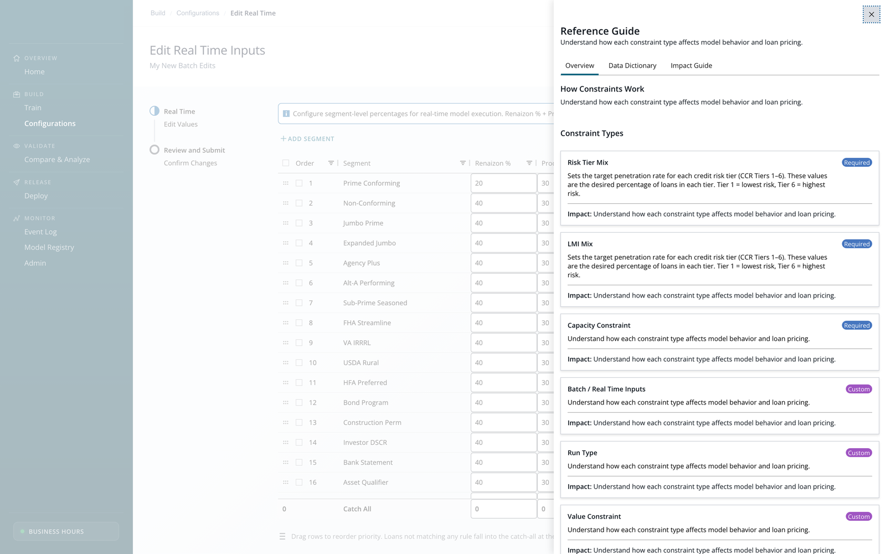
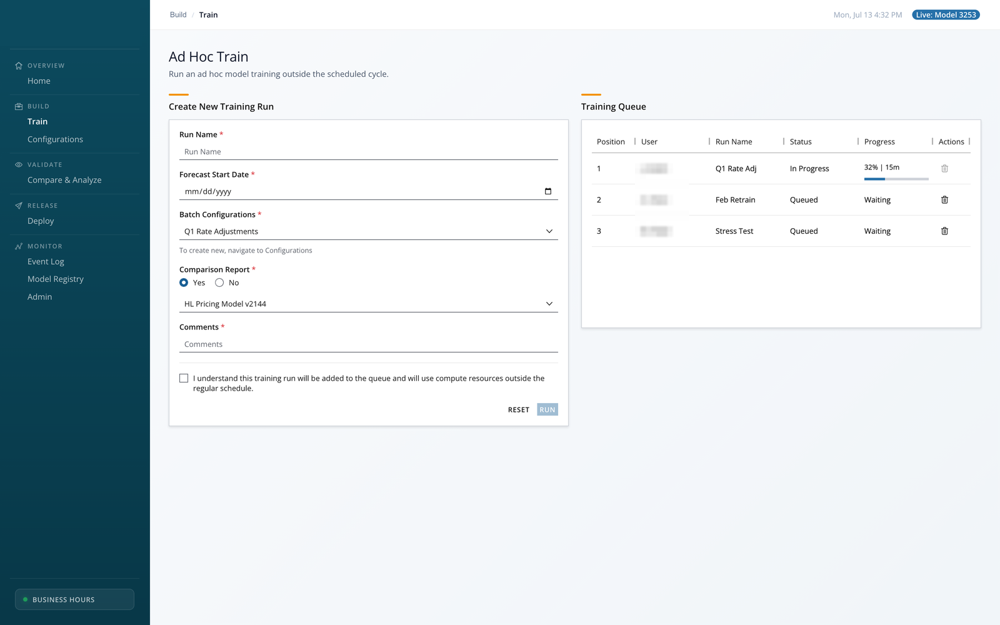
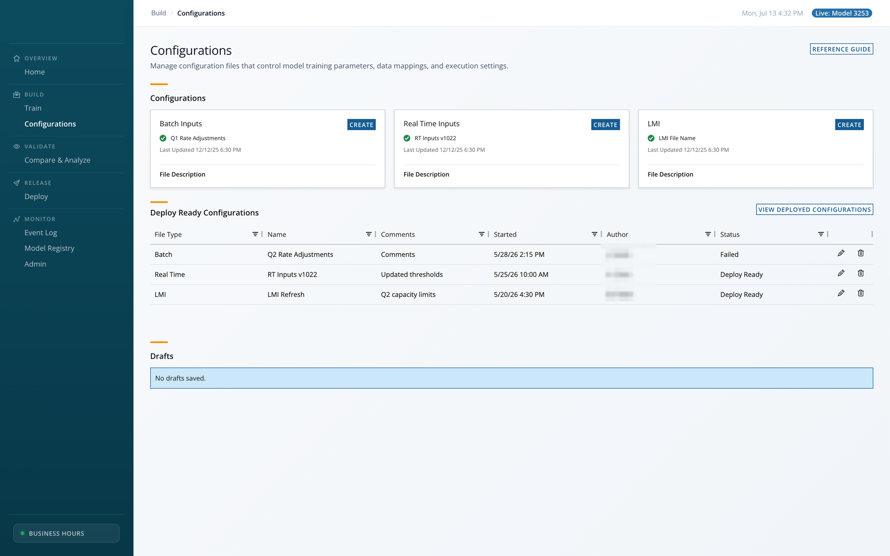
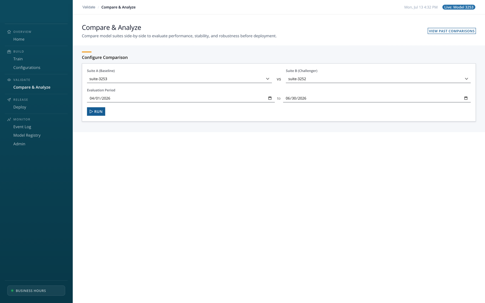
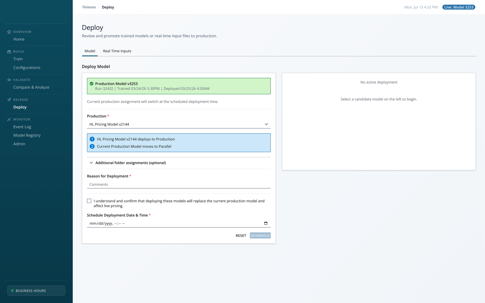
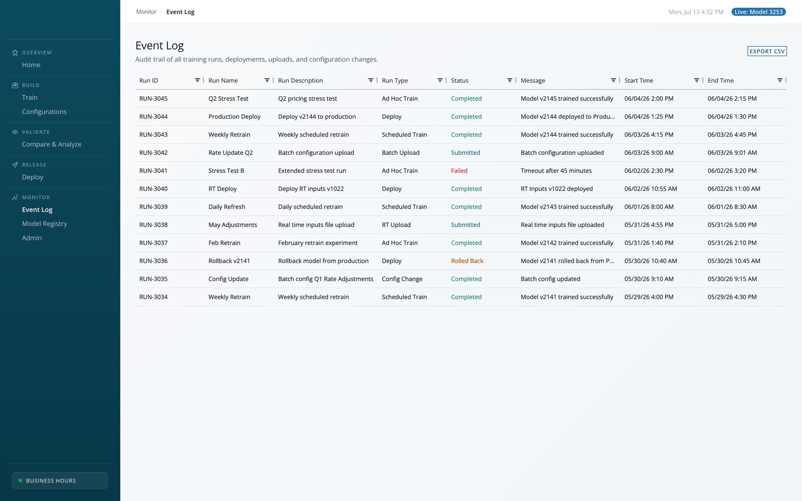
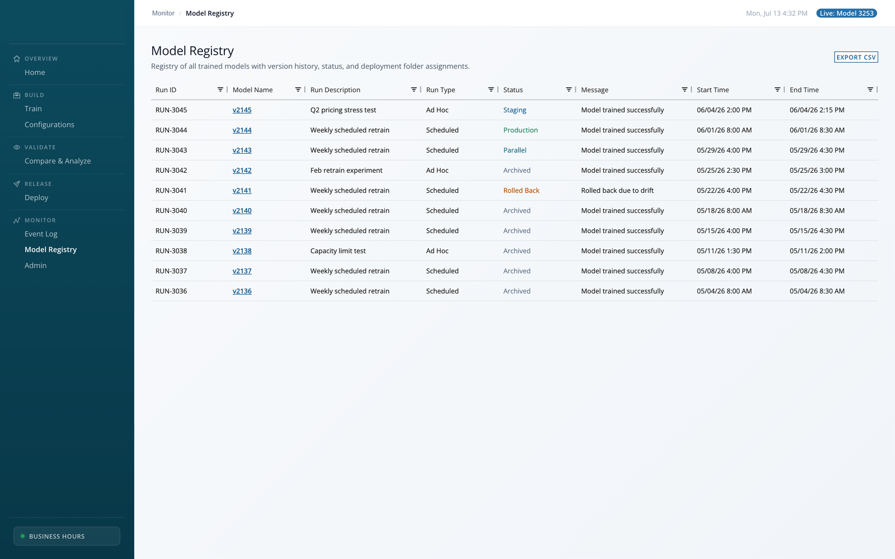
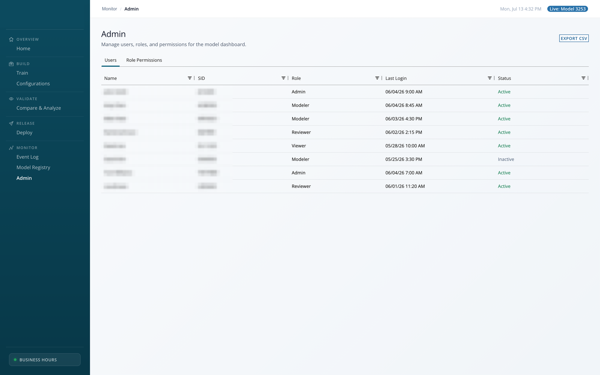
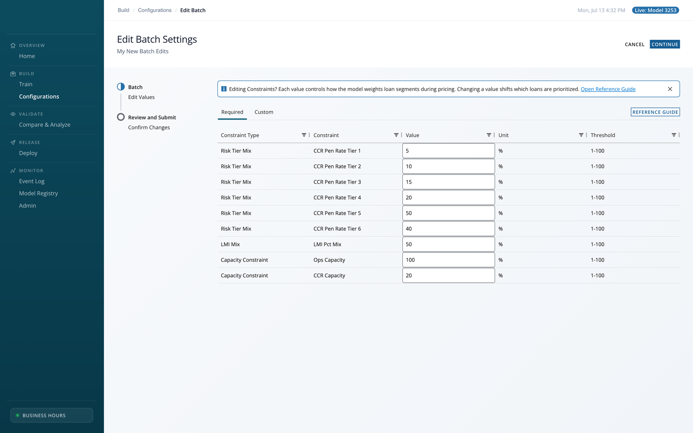

Impact: what changed
The new pricing model made the workflow faster. The redesigned dashboard made that speed usable and safe for the business to own.
Model drove
Hours to minutes
Workflow runtime reduction is attributable to the new pricing model, not to UX.
UX enabled
- Reduced error risk on inputs that weren't intuitive.
- Gave users one place to see status across the workflow.
- Handed configuration ownership to the pricing team.
Outcome metrics will be captured after the Q3 build ships.
What the redesign did
-
Reduced error risk with in-context guidance
Product's Excel-based process was error-prone. I moved inputs in-app with dynamic helper text and inline guidance, catching mistakes at input time.
-
Gave users an overview of the workflow
Users had no single place to see status, so I restructured the IA into a 4-phase lifecycle with a “what this affects” side panel.
-
Let the business own its configuration
Changes once routed through product. The Configurations screen lets the pricing team set parameters directly.
Handoff: shifting ownership to the business
The biggest change is who can act. Configurations lets the pricing team own its parameters instead of filing requests to product.
Every parameter change, like excluding certain loan types from pricing, used to go through product as a request: a queue, a translation step, and a place for errors to hide. The redesign moves that control to the people who own the decision.
Before Routed through product
- Pricing team
- Files a change request
- Product team translates & edits
- Change goes live
A queue, a translation step, and a place for errors to hide.
After Owned by pricing
- Pricing team
- Edits configuration directly with guardrails
- Change goes live
Validation and “what this affects” make self-service safe.
- What changed
- Configuration parameters became directly editable by the pricing team, with guardrails (validation + “what this affects”) built into the screen.
- Why it's safe
- The same guidance that reduces errors also makes self-service ownership safe.
- Boundary
- The pricing team owns parameters. Product still owns Reference Guide content and the underlying model logic. Clear lines, not a free-for-all.
Problem
A fast new model shipped with a bare-bones tool. The business made errors, couldn't see impact, and had to route every change through product.
The model cut runtime from hours to minutes, but managing it meant editing configs in Excel and filing a request to product for every change. A small team makes high-volume, high-value pricing decisions daily, so one mishandled input carries real financial weight. The risk was never speed. It was confidence, correctness, and control.
Current-state workflow: what I mapped first
Before designing anything, I mapped the real end-to-end flow. It exposed three gaps that shaped everything after.
The three gaps I found
- Human error risk Configs edited through error-prone Excel uploads. No validation, easy to break silently.
- Unclear governance Permissions and ownership weren't defined. Who could change what was ambiguous.
- Low visibility No view into impact, what's live, what failed, or whether the model was adding value.
Optional deep-dive: the end-to-end flow
The workflow blends daily human pricing decisions with system aggregation and model-driven pricing (real-time scoring plus biweekly retraining). It spans several tools: business analysis for year-over-year insight, Excel-based configuration, CSMT margins, and an aggregation platform (Renaizon) that feeds the real-time bid and price flow.
- Business input (daily)
- The business sets strategy from market conditions and performance, then updates a CM adjuster file and CSMT margins, within role-based allowances and with written approval. Inputs flow downstream and aggregate in Renaizon.
- Model configs (product)
- Model configs are edited in Excel and re-uploaded to Streamlit based on Capital Markets suggestions. Pain points: weak error monitoring and low visibility into what's live or what failed.
- Retraining (biweekly)
- A batch pulls aggregated, competitive, and risk-rating data, retrains on historical loan + performance data, and produces a new model. Product, analytics, and modeling approve or reject. An authorized user swaps it into production, an action that can't be undone.
- Real-time scoring (daily)
- Correspondent bid tapes are batched in 30-minute windows, priced via Renaizon's base price plus a model price, then finalized and published to third-party platforms.
Discovery: the two-sided problem Jan–Feb
Product's ask was simple: let analysts edit the model's configurations easily. But when I sat with the pricing team, a second problem surfaced. They didn't just want to change parameters, they wanted to understand the impact of every edit, with enough context to trust it.
My role wasn't to collect requirements, it was to broker a gap. Product optimized for speed of editing. The business optimized for confidence in the outcome. Every screen after this had to serve both.
What the interviews surfaced
Interviews with pricing and modeling users surfaced four consistent themes.
What I learned
Users hit unfamiliar terminology and assumed a steep learning curve, but the pricing concepts hadn't changed. That shifted the problem from “teach a whole new system” to “bridge the vocabulary.”
What came up in interviews
- Context gap
I don't always know what a field actually changes.
- No overview No single place to see status across the workflow.
- Fragile inputs Formatting and typos silently produced bad states.
- Ownership ambiguity Unclear which team should change what.
Optional deep-dive: how discovery played out
The open questions the current-state map raised
- What are the most common mistakes to prevent (typos, incorrect ranges, wrong counterparties), and should certain configs be non-editable?
- Should users preview impact before applying a change, or is inline validation enough?
- Which failures are informational vs. blocking, and how does a user know what's live?
- If a model doesn't send within its SLA window, is it healthy, and do we need rollback, clear ownership, and approval?
- How do teams measure whether the model actually helped win loans or improved profit/volume?
Scope evolution: as findings landed and early feedback came back positive, the work expanded from a single screen to eight, a full operational suite spanning build, validate, release, and monitor.
Iteration notes (deeper detail)
Design ran through March with steady informal feedback from the pricing and modeling & analytics teams, plus weekly reviews with product. Delivery from April to June was iterative. I used VS Code to build clickable prototypes and iterate quickly with users.
Information architecture & system logic
One screen became a coherent lifecycle. I made the model's own phases the navigation, so eight screens read as four steps: Build, Validate, Release, Monitor.
Eight screens, four phases
- Build Set up and parameterize a model run. Screens: Train, Configurations.
- Validate Check calibration and stability before release. Screen: Compare & Analyze.
- Release Review deploy-ready items and push. Screen: Deploy.
- Monitor Audit, catalog, and govern after release. Screens: Event Log, Registry, Admin.
Optional deep-dive: the full lifecycle map
-
Build
Set up and parameterize a model run.
- Train
- Configurations
-
Validate
Check calibration, stability, and robustness before release.
- Compare & Analyze
-
Release
Review deploy-ready items and push to release.
- Deploy
-
Monitor
Audit, catalog, and govern after release.
- Event Log
- Model Registry
- Admin
The system rules I set: consistent phase labeling on every screen, a shared “what this affects” side panel, and one guidance pattern (tooltip to side panel) reused everywhere, so the 8 screens read as one system, not eight tools. Monitor is also where the current-state gaps land: run status and “what's live,” blocking vs. informational failures, role-based permissions with history, and a path toward quantifying model value.
Reference Guide UX pattern
New vocabulary, same pricing concepts. So instead of training people, I put the guidance in the screen: inline links open a side-panel guide, and helper text reacts as you type. That guidance is what makes self-service ownership safe.
Optional deep-dive: the pattern & states

Side-panel Reference Guide
- Trigger
- Inline tooltip links beside labels and inputs open the guide in a side panel, in context, no navigation away.
- Content types
- Field definitions, accepted formats, and “what this affects” impact notes.
- Ownership
- Maintained by the product team, so guidance stays current as the model evolves.
Dynamic helper text
Helper text below each input responds to what the user types, which directly supports the error-reduction goal.
- Empty Exclusion list Enter loan-type codes, comma-separated (e.g., A1, B2).
- Valid A1, B2, C3 3 loan types will be excluded from pricing.
- Format error A1; B2 Use commas, not semicolons. “A1; B2” won't be recognized.
Screens delivered
Eight screens across four operational phases: Build, Validate, Release, and Monitor.







Deep dive: Configurations screen
Configurations carries the two biggest outcomes: error reduction and the handoff to the business. Here's the before and after, and the decisions behind it.

Decisions on this screen
- Fields grouped by what they affect, not by data type, so an operator reasons in terms of outcomes, not database columns.
- Validation is inline and specific (“use commas, not semicolons”) rather than a generic “invalid input” at submit time.
- Batch and real-time edits share one layout, so the pricing team learns the screen once and reuses it for handoff.
The pattern I rejected
My first instinct was a form, the pattern everyone knows. It fell apart on contact with the data: a single configuration has hundreds of parameters, so a form becomes a scroll marathon where you can't compare values or edit in bulk. I moved to a dynamic, editable table instead, so users scan, compare, and change values in place, the way they already think about the data.
Before Form: one field at a time
After Table: scan, compare, edit in place
Deep dive: Compare & Analyze screen
Today, modelers are handed raw metrics and build their analysis from the ground up, every single time. The feedback was clear: it would help to get a recommendation for the simple baseline checks, so their analysis doesn't restart from zero on every comparison.
The design response
Two decisions carried the screen: lead with a verdict (DEPLOY, HOLD, or INVESTIGATE) instead of a wall of charts, and never make it a black box, every verdict shows the plain-language reasons behind it so the modeler stays the decision-maker.
Optional deep-dive: the six design decisions
- Constrain the inputs so a bad comparison is impossible
- Suite A (baseline) vs Suite B (challenger) over an evaluation window. Run stays disabled with an inline reason if you pick the same suite twice or invert the date range. Error prevention, not error messages.
- Lead with a verdict, not a chart
- The screen resolves to DEPLOY, HOLD, or INVESTIGATE first. This is the direct answer to the feedback: give modelers the baseline check up front so their expert analysis starts somewhere instead of from scratch.
- Never a black box
- The verdict is computed across four independent lenses (performance, stability, robustness, feature drift), and each writes a plain-language reason (“MAE improved: 42 to 38 bps”, “BREACH: mean error below threshold”, “base_price_ldl dropped out of top 3”). It automates the baseline checks but shows its work, so the human stays the decision-maker.
- Progressive disclosure of the evidence
- Verdict, then KPI strip, then robustness and out-of-time trend, then feature, coefficient, and calibration detail, then metadata. Stop reading when you're convinced.
- Two model families, two kinds of proof
- A tab switches between Market Value (feature-rank table) and Winchance (coefficient signs plus calibration against a log-score threshold). Same shell, model-appropriate evidence.
- Close the governance loop
- Export to PDF, because a deploy decision needs an audit trail for sign-off.
The hard part wasn't layout, it was deciding how much to automate. The feedback asked for baseline recommendations, not a machine that overrides experts. So I designed the reasoning to be visible: the system does the repetitive first pass, the modeler keeps authorship of the call.
Alternatives I considered (and dropped)
The final guidance pattern wasn't the first idea. It won because it reduced errors without crowding a dense, data-heavy screen.
Optional deep-dive: the alternatives table
| Direction | Why I dropped it | What I kept |
|---|---|---|
| Always-visible inline help under every field | Overloaded an already dense screen; users skimmed past it. | Kept short helper text, but only reactive to input. |
| Modal “wizard” for configuration | Hid the overview and blocked power users doing quick edits. | Kept the guided sequence as optional, not forced. |
| Separate “help center” area | Pulled users out of context; guidance went stale and unused. | Moved to in-context side panel, owned by product. |
| Flat 8-item navigation | Didn't answer “where am I in the process”, the core complaint. | Replaced with the 4-phase lifecycle IA. |
Constraints & tradeoffs
Real bandwidth and ownership boundaries shaped the design as much as the research did.
Optional deep-dive: constraints & tradeoffs
-
Constraint Users were new to model concepts.
Tradeoff Built guidance into the UI rather than relying on training alone.
-
Constraint Inputs were error-prone.
Tradeoff Added helper-text and validation patterns without overloading the screens.
-
Constraint Engineering bandwidth pushed the build to Q3.
Tradeoff Prioritized high-risk workflows first (Configurations, Compare & Analyze).
-
Constraint Sensitive details are redacted.
Tradeoff Showed mechanisms and patterns instead of proprietary data (see the note below).
What I'd measure next
A metrics plan to capture after the Q3 build ships.
Optional deep-dive: the metrics plan
- Error rate: typos and formatting errors on key inputs.
- Time-to-complete: for key tasks, especially configuration.
- Ownership shift: number of pricing-driven config changes vs. product-team changes.
- Support load: reduction in questions and escalations.
- Guidance adoption: Reference Guide usage.
What I'd do differently
Instrument earlier, and pressure-test the in-context help with brand-new users sooner.
Prototyping over debating
Instead of debating whether a dynamic table was too much, I prototyped one in VS Code. Seeing it live shifted the conversation from “can we even do this?” to “how should this behave?”
Optional deep-dive: a decision I rethought
- Define the measurement plan and event instrumentation during design, not after, so baselines exist the moment the build ships.
- Recruit more first-time users earlier to stress-test whether the guidance truly closes the context gap.
- Prototype the handoff workflow (pricing team owning configs) with the actual owners sooner to de-risk the ownership transition.
Overcoming hesitation by prototyping
Early on, the team was hesitant about how much functionality to put into a table. They weren't familiar with building dynamic, interactive tables and worried it was too much to take on. Rather than debate it in the abstract, I prototyped in VS Code and showed them a working example built on AG Grid. Seeing sorting, inline editing, and validation live in a real table shifted the conversation from “can we even do this?” to “how should this behave?” Prototyping unblocked the decision and gave the team confidence to move forward.